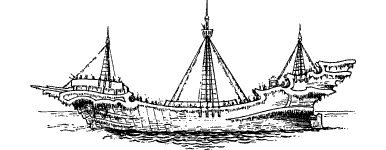
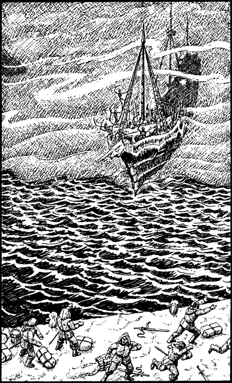

181
From out of the eerie mist there looms a high-prowed ship, wrought of age-blackened timbers which glisten with ice and frost. It speeds into the harbour and a morbid terror grips the hearts of the Lencian garrison when they see that it is crewed by a cadaverous host of skeletal warriors. A ghastly wail arises from the invading ship, an unholy shriek that shatters the garrison’s will to resist. As one, the shocked Lencians turn and flee from the quayside, dropping and discarding their supplies and weapons in their hurry to get away.
{kind=link}

‘Ishir preserve us!’ cries Lanza, as he takes up his sword belt and hurries towards the door. ‘My men are routing. I must rally them to the defence before all is lost!’

Prarg unsheathes his sword and rushes after Lanza. Outside the door you see a circular stone staircase which leads up to the roof, or down to the base of the watchtower. Lanza descends the stairs but Prarg does not follow. Instead, he begins to climb the steps to the roof.
If you wish to follow Captain Lanza, turn to 264.
If you decide to go after Captain Prarg, turn to 14.